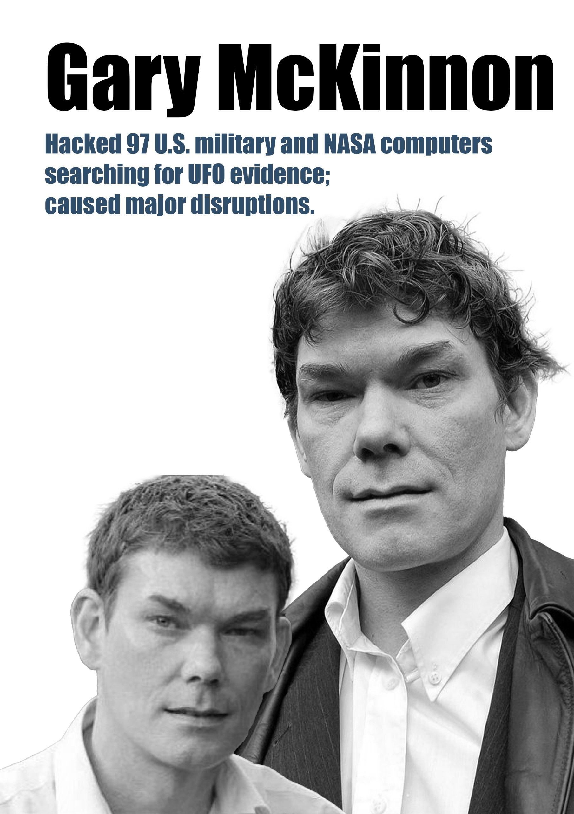

Gary McKinnon

In 2001 and 2002, Scottish hacker Gary McKinnon gained unauthorized access to 97 U.S. military and NASA computers. His motivation wasn't financial gain or digital destruction; he was searching for suppressed information regarding UFOs and "Free Energy" technology.
His case became one of the most famous extradition battles in history, highlighting the complexities of international law and the treatment of neurodiverse individuals in the justice system.